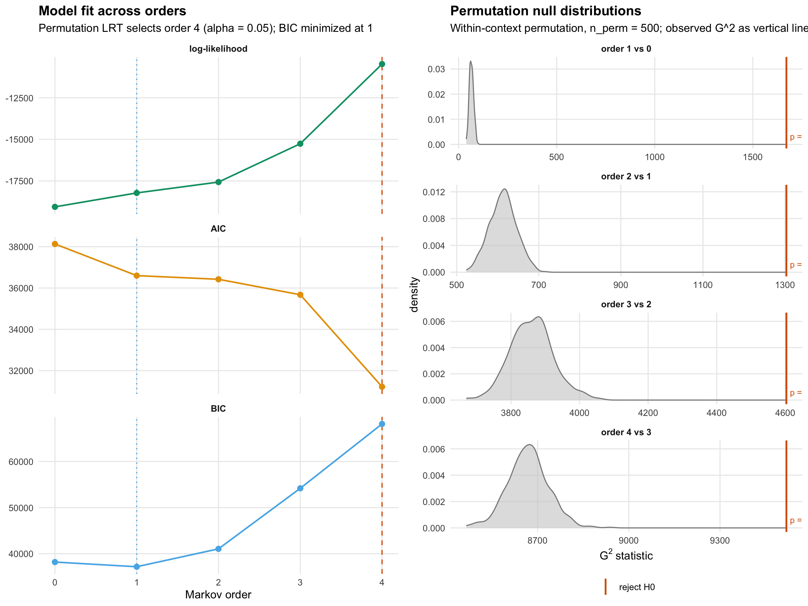
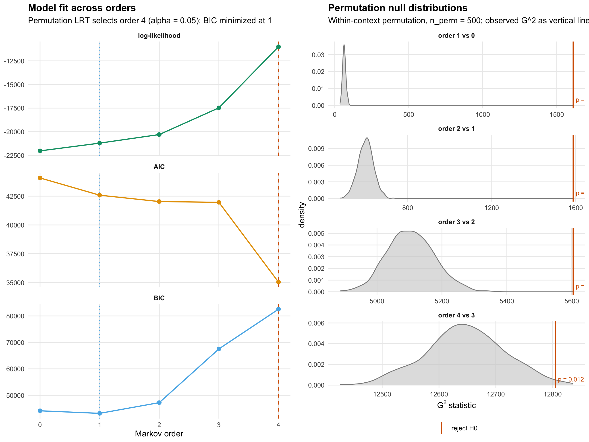
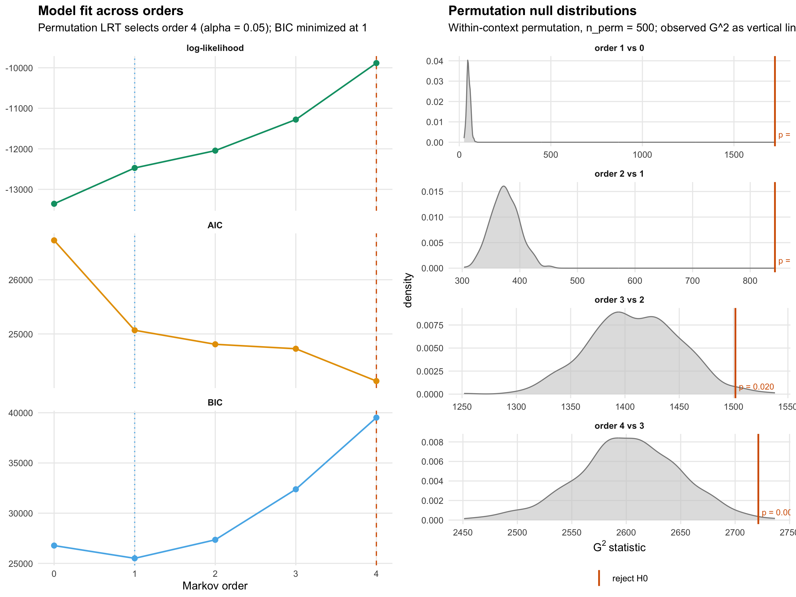

Tutorial: Testing the Markov order of coded sequences
Source:vignettes/articles/tutorial_markov_order.qmd
Tutorial: Testing the Markov order of coded sequences
LAK SRL data and human–AI vibe-coding sessions
1. Why test the Markov order?
A transition network (TNA, HON, MMM, glasso) is built on the assumption that the next code depends only on the current code — first-order Markov. If the real process has longer memory, edge weights are averaged over hidden context, group comparisons can differ spuriously, and bootstrap CIs are too narrow. If it is first-order, higher-order fits waste parameters on noise. A principled test is therefore a prerequisite.
Order- Markov means: the next state depends only on the last states. Testing “is order enough?” reduces to the conditional independence
$$ H_0:\quad X_{t+1} \;\perp\; X_{t-k+1} \;\Bigm|\; (X_{t-k+2}, \ldots, X_t). $$
markov_order_test() reports three criteria in one tidy output:
- BIC (Schwarz 1978; Katz 1981 for Markov chains) — consistent for Markov-order selection, the standard.
- AIC — weaker penalty; over-selects at large .
- Permutation-LRT ( with within-context shuffling) — exact null, answers “is there any detectable higher-order dependence?”
When all three agree, the answer is unambiguous. When they diverge, the divergence itself is informative — we’ll see why below.
2. Calibration: group_regulation
A sanity check on data with known ground truth (simulated as first-order Markov by the tna package).
data(group_regulation)
gr_res <- markov_order_test(group_regulation, max_order = 4L,
n_perm = 500L, seed = 42L)
gr_res#> Markov Order Test [within-w permutation, n_perm = 500, alpha = 0.050]
#> 2000 sequences / 27533 observations / 9 states
#>
#> Selected order BIC: 1 AIC: 1 permutation-LRT: 1
#>
#> order loglik AIC BIC df g2 p_permutation p_asymptotic
#> 0 -53280.55 106577.10 106642.88 NA NA NA NA
#> 1 -46660.94 93475.87 94109.05 64 13203.77 0.001996008 0.0000000
#> 2 -46377.27 93900.53 98612.39 532 561.07 0.215568862 0.1851883
#> 3 -44824.60 94827.19 116116.90 3300 3056.22 0.363273453 0.9989288
#> 4 -39958.71 93609.42 149905.04 10083 9452.84 0.127744511 0.9999970
#> significant
#> NA
#> TRUE
#> FALSE
#> FALSE
#> FALSEWhat the output says
The three selectors at the top all pick order 1, which matches tna’s simulator. Reading the columns:
-
loglikclimbs with (more parameters always fit training data better). -
AICandBICboth hit their minimum at order 1, rising thereafter. BIC’s rise is steeper because its per-parameter penalty is rather than AIC’s 2. -
dfis the degrees of freedom for the “order- vs order-” test (sum over contexts of , so df grows combinatorially). -
p_permutationat order 2 is 0.27: we fail to reject at the conventional , correctly treating the process as first-order. The asymptotic p-value (p_asymptotic) agrees.
Interpretation. When a test’s calibration is right, this is what it looks like on true first-order data: order 1 rejects its null (the data is more than iid), then orders 2–4 accept their nulls with p-values sampled from . That gives us confidence to interpret real data.
summary(res) returns the same information as a tidy data.frame you can dplyr / knitr::kable / export downstream:
summary(gr_res)3. LAK (SRL log data)
The LAK dataset is long-format (one row per coded event). We normalise it with Nestimate’s canonical prepare(), then hand the prepared object directly to markov_order_test() — no reshaping or stripping needed.
lak <- read.csv(
"/Users/mohammedsaqr/Library/CloudStorage/GoogleDrive-saqr@saqr.me/.tmp/1097498/Git/LAK.csv",
stringsAsFactors = FALSE, check.names = FALSE
)
lak_prep <- prepare(lak, actor = "User", action = "Code", order = "Order")
lak_res <- markov_order_test(lak_prep, max_order = 4L,
n_perm = 500L, seed = 42L)
lak_res#> Markov Order Test [within-w permutation, n_perm = 500, alpha = 0.050]
#> 175 sequences / 9769 observations / 9 states
#>
#> Selected order BIC: 1 AIC: 4 permutation-LRT: 4
#>
#> order loglik AIC BIC df g2 p_permutation p_asymptotic
#> 0 -19058.03 38132.07 38189.56 NA NA NA NA
#> 1 -18220.39 36600.78 37175.74 64 1671.43 0.001996008 5.468840e-307
#> 2 -17567.99 36423.98 41052.39 576 1303.46 0.001996008 2.808232e-58
#> 3 -15261.36 35674.73 54188.36 4030 4603.22 0.001996008 4.907693e-10
#> 4 -10470.40 31218.79 68152.63 8737 9518.29 0.001996008 4.518100e-09
#> significant
#> NA
#> TRUE
#> TRUE
#> TRUE
#> TRUEWhat the output says
The three selectors disagree: BIC = 1, AIC = 4, LRT = 4 (capped at max_order).
-
BICis minimised at order 1. The jump from order 1 to order 2 adds thousands of parameters for a log-lik gain that’s large in absolute terms but small per parameter. Schwarz’s penalty is exactly designed to reject that trade. -
AICkeeps falling through higher orders because its 2-per-parameter penalty is too weak for . This is why AIC is not consistent for Markov-order selection and why BIC is the standard. -
p_permutationrejects at every order because the test statistic grows linearly in : with ~10k transitions, any residual deviation from first-order independence becomes detectable, even if it’s modelling-wise trivial.
Plot
plot(lak_res)
What the plot shows
- Panel A (left): the three information criteria across orders. The dashed red line is the permutation-LRT’s selected order; the dotted blue line is the BIC minimum. They differ for LAK — a sign that is large enough to detect signal the penalty considers too small to keep.
- Panel B (right): the within-context permutation null distribution for each “order vs order ” comparison, with the observed as a vertical line. Red = reject, blue = accept at . On LAK every observed is extreme enough to reject, but the gains shrink in relative terms — which is why BIC stops at 1.
Interpretation
For modelling: use first-order Markov. The LRT rejections at orders 2–4 are real but reflect sample-size sensitivity, not a signal big enough to justify the combinatorial parameter cost of a global higher-order matrix. With 9 codes, an order-3 model has free parameters; most will be estimated from a handful of observations and will not generalise.
If you want the higher-order patterns anyway, they live at the path level. Use build_hypa(lak_wide) to flag specific over- or under-represented triples against a first-order null, build_hon() for a variable-order network that only extends order where the data supports it, or build_mogen(criterion = "bic") for a multi-order generative model with principled layer-wise selection.
4. Human vs AI vibe-coding sessions
Nestimate ships human_long and ai_long — coded interaction sequences from the same 429 vibe-coding sessions, split by actor. Same one-call prepare() on each.
data(human_long); data(ai_long)
h_prep <- prepare(human_long, actor = "session_id",
action = "code", order = "code_order")
a_prep <- prepare(ai_long, actor = "session_id",
action = "code", order = "code_order")Human
h_res <- markov_order_test(h_prep, max_order = 4L,
n_perm = 500L, seed = 42L)
h_res#> Markov Order Test [within-w permutation, n_perm = 500, alpha = 0.050]
#> 425 sequences / 10792 observations / 9 states
#>
#> Selected order BIC: 1 AIC: 4 permutation-LRT: 4
#>
#> order loglik AIC BIC df g2 p_permutation p_asymptotic
#> 0 -22031.34 44078.69 44136.98 NA NA NA NA
#> 1 -21211.24 42582.49 43165.41 64 1611.65 0.001996008 1.695381e-294
#> 2 -20302.20 42030.40 47225.72 576 1588.13 0.001996008 1.573701e-95
#> 3 -17472.78 41963.55 67532.09 4949 5604.46 0.001996008 1.269152e-10
#> 4 -10996.48 35036.96 82559.91 13435 12804.81 0.011976048 9.999523e-01
#> significant
#> NA
#> TRUE
#> TRUE
#> TRUE
#> TRUEInterpretation — human sessions
BIC picks order 1, AIC picks 4, LRT sequential picks 4. The pattern matches LAK: first-order Markov is the parsimonious answer; the higher-order rejections reflect detectable but small residual dependence at large . Practically, a human-side TNA should be fit at order 1.
AI
a_res <- markov_order_test(a_prep, max_order = 4L,
n_perm = 500L, seed = 42L)
a_res#> Markov Order Test [within-w permutation, n_perm = 500, alpha = 0.050]
#> 425 sequences / 8548 observations / 8 states
#>
#> Selected order BIC: 1 AIC: 4 permutation-LRT: 4
#>
#> order loglik AIC BIC df g2 p_permutation p_asymptotic
#> 0 -13355.99 26725.99 26775.36 NA NA NA NA
#> 1 -12471.92 25067.85 25505.16 49 1723.89 0.001996008 0.000000e+00
#> 2 -12044.60 24809.20 27348.44 378 842.95 0.001996008 1.725765e-37
#> 3 -11278.51 24727.01 32380.01 1558 1501.70 0.019960080 8.435248e-01
#> 4 -9884.64 24131.28 39514.86 2646 2721.31 0.005988024 1.503962e-01
#> significant
#> NA
#> TRUE
#> TRUE
#> TRUE
#> TRUEInterpretation — AI sessions
BIC picks order 1, AIC picks 4, LRT sequential picks 4. BIC’s verdict is again first-order: the AI side is also most compactly described as first-order Markov for global modelling.
Plots
plot(h_res)
Human plot. The BIC curve (panel A, bottom facet) has a sharp minimum at order 1 and rises nearly linearly thereafter. The permutation-null densities (panel B) sit well below the observed at every order, which is why every comparison is coloured red — but compare this to the relative BIC cost of each extra order.
plot(a_res)
AI plot. Shape is similar to human’s. The log-likelihood panel (top- left) shows the AI side has a slightly steeper slope between orders 1 and 2 than the human side did, consistent with somewhat longer mid-range memory — but not enough to move the BIC minimum.
Comparative interpretation
Both actors sit in the same regime: BIC = order 1, LRT = floor. The interesting differences between human and AI vibe-coding are not at the global-order level; they live in:
- Specific over-represented triples (where
build_hypa()per actor lets you compare which paths carry significant higher-order weight for each). - Transition-matrix shape differences (directly comparable at order 1 via
permutation_test()between the two netobjects). - Stationary distributions, state dwell times, and return times (see
markov_stability()for a tidy per-state decomposition).
A global Markov-order test is the prerequisite: it tells you the first-order comparison is fair (neither actor’s sequences are so deeply higher-order that first-order is meaningless). With that confirmed, the real comparison work happens at the path and parameter level.
5. Practical recipe
| question | tool | what it answers |
|---|---|---|
| Is first-order enough for my TNA? |
markov_order_test() → BIC |
yes/no, modelling-scale |
| Which specific paths violate first-order? | build_hypa() |
per-k-gram over/under |
| Do I need a variable-order HON? | build_hon() |
extends where justified |
| What is the globally optimal order? | build_mogen() |
BIC-selected for the whole process |
| Do two groups differ in higher-order patterns? | per-group build_hypa() + compare |
path-level comparison |
Default selector: BIC. Treat LRT rejections at higher orders as pointers to where path-level tools (HYPA, HON, MOGen) should take over — not as a mandate to fit an order- global matrix.
6. Method reference
- Test statistic: classical for the conditional independence on observed -grams.
- Null distribution: exact within- permutation of successor labels. No plug-in MLE bias, no refitting per replicate, handles sparse tables because marginals are preserved by construction.
-
Equivalence (validated to
< 1e-10): our Pearson- variant matchesmarkovchain::verifyMarkovProperty()byte-for-byte; our matches a from-scratch manual formula. - Calibration: on 150 pure order-1 synthetic datasets, the permutation p-value is distributed as (Kolmogorov–Smirnov ); Type-I rate at is within .
-
Tidy output:
summary(res)returns a data.frame with columnsorder, loglik, AIC, BIC, df, g2, p_permutation, p_asymptotic, significantand attributesoptimal_order,bic_order,aic_order.